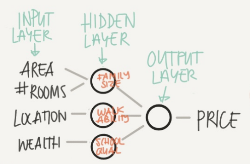

前言
参考链接：
相关资源：
目的：学习吴恩达老师深度学习课程第一课《神经网络与深度学习》过程中，将所得总结成该笔记。有助于后期温习。
第一周：Introduction to Deep Learning
Welcome
神经网络与深度学习：学习如何建立神经网络，以及如何训练
改善深层神经网络：学习超参数调整、正则化、诊断偏差和方差以及一些高级优化算法
搭建机器学习项目：学习如何搭建机器学习项目
CNN：学习如何构建 CNN
序列模型：学习序列模型，以及如何将其应用于自然语言处理
What is a Neural Network
NN 相当于一个函数 y ^ = f ( x ) \hat y = f(x) y ^ = f ( x ) x x x f ( ⋅ ) f(\centerdot) f ( ⋅ ) y ^ \hat y y ^
以房价预测为例，area，bedrooms，location 和 wealth，4个属性决定了该房子的价值。所以构建一个有4个输入特征的 NN。只要将相关的特征输入到模型中，就能预测对应的房价。但是要经过一定的训练才能得到理想的精度。

模型的中间结点和所有输入特征相连，通过训练，这些特征结点可以调节和每个输入特征之间的相关联性大小。比如第一个结点可能代表家庭人口，而家庭人口取决于 size 和 bedrooms，而和 location 和 wealth 不相干。
Supervised Learning with Neural Networks
监督学习，即所有输入数据都有确定的对应输出数据 ，在各种网络架构中，输入数据和输出数据的节点层都位于网络的两端，训练过程就是不断地调整它们之间的网络连接权重。
有多种不同架构的监督学习，比如标准的 NN 可用于训练房子特征和房价之间的函数，CNN 可用于训练图像和类别之间的函数，RNN 可用于训练语音和文本之间的函数。他们的模型架构如上图所示。
Why is Deep Learning taking off?
深度学习能发展起来主要是由于大数据的出现。
在小规模的数据量下，模型的性能取决于个人的特征工程能力。而随着数据量的不断增大，神经网络的优势就愈发明显了。从图中可以看出，随着规模【数据规模，网络规模】的不断扩大，神经网络的性能越来越好。
因此为了更好的性能，人们要么训练一个更大的神经网络，要么投入更多的数据。但是 labeled data 总是有限的，因此目前人们倾向于训练出更大的 NN。但是一个更大的神经网络意味着更长的训练时间，因此目前的许多算法都是在提升神经网络的运行速度。
例如新型激活函数的出现。因为sigmoid 函数在正无穷处和负无穷处会出现趋于零的导数，这正是梯度消失导致训练缓慢甚至失败的主要原因。而用 ReLU 函数替换 sigmoid 函数可以在反向传播中保持快速的梯度下降过程。
要研究深度学习，需要学会「idea — 代码 — 实验 — idea」的良性循环。
第二周：Basics of Neural Network programming
Binary Classification
关于二分类问题，可以以判断一张图像是不是猫为例子。将一张图像作为模型的输入，如果该图像是猫，则输出1，否则输出0。Logistic Regression 是解决二分类问题的一种常见算法。
符号约定
x x x n x n_{x} n x ( n x , 1 ) \left(n_{x},1\right) ( n x , 1 ) y y y ( 0 , 1 ) \left(0,1\right) ( 0 , 1 ) ( x ( i ) , y ( i ) ) \left(x^{(i)}, y^{(i)}\right) ( x ( i ) , y ( i ) ) X = [ x ( 1 ) , x ( 2 ) , … , x ( m ) ] X=\left[x^{(1)}, x^{(2)}, \ldots, x^{(m)}\right] X = [ x ( 1 ) , x ( 2 ) , … , x ( m ) ] n x × m n_{x} \times m n x × m Y = [ y ( 1 ) , y ( 2 ) , … , y ( m ) ] Y=\left[y^{(1)}, y^{(2)}, \ldots, y^{(m)}\right] Y = [ y ( 1 ) , y ( 2 ) , … , y ( m ) ] 1 × m 1 \times m 1 × m
Logistic Regression Hypothesis Function
我们可以将 logistic 回归看成将两组数据点分离的问题，如果仅有线性回归（激活函数为线性），则对于非线性边界的数据点（例如，一组数据点被另一组包围）是无法有效分离的，因此在这里需要用非线性激活函数替换线性激活函数。
关于识别一张图片是否为猫的问题，我们使用逻辑回归，将特征向量 X X X reshape 成向量】输入模型后，输出预测值 y ^ \hat y y ^ y y y 令 y ^ \hat y y ^ y y y y ^ = p ( y = 1 ∣ x ) \hat y = p(y=1|x) y ^ = p ( y = 1∣ x )
如果将假设函数设为 y ^ = w T x + b \hat{y}=w^{T} x+b y ^ = w T x + b w w w b b b y ^ = σ ( w T x + b ) \hat{y}=\sigma \left(w^{T} x+b\right) y ^ = σ ( w T x + b )
Logistic Regression Cost Function
神经网络的训练目标是确定最合适的权重 w 和偏置项 b，那这个过程是怎么样的呢？
这其实就是一个优化问题，优化过程的目的是使预测值 y ^ \hat y y ^ y y y w w w b b b
Logistic Regression 中用到的损失函数是：L ( y ^ , y ) = − y log ( y ^ ) − ( 1 − y ) log ( 1 − y ^ ) L(\hat{y}, y)=-y \log (\hat{y})-(1-y) \log (1-\hat{y}) L ( y ^ , y ) = − y log ( y ^ ) − ( 1 − y ) log ( 1 − y ^ )
Gradient Descent
首先初始化 w w w b b b 找到下坡的方向【求梯度】后，以固定的学习率 α \alpha α 直到到达全局最优解或者接近全局最优解的地方 。
用公式来说明：
w : = w − α ∂ J ( w , b ) ∂ w b : = b − α ∂ J ( w , b ) ∂ b \begin{array}{l}
w:=w-\alpha \frac{\partial J(w, b)}{\partial w} \\
b:=b-\alpha \frac{\partial J(w, b)}{\partial b}
\end{array}
w := w − α ∂ w ∂ J ( w , b ) b := b − α ∂ b ∂ J ( w , b )
其中学习率的大小可以决定收敛的速度和最终结果。
学习率较大时，初期收敛很快，不易停留在局部极小值，但后期难以收敛到稳定的值；学习率较小时，情况刚好相反。一般而言，我们希望训练初期学习率较大，后期学习率较小。
Derivatives
导数其实相当于函数的斜率。
以函数 f ( a ) = 3 a f(a)=3a f ( a ) = 3 a a a a f ( a ) f(a) f ( a ) a a a d f ( a ) d a = 3 \frac{d f(a)}{d a}=3 d a df ( a ) = 3
More Derivative Examples
导数就是斜率，而函数的斜率，在不同的点是不同的。对于函数 f ( a ) = a 2 f(a) = a^2 f ( a ) = a 2 f ( a ) = log a f(a)=\log{a} f ( a ) = log a
Computation Graph
上图是函数 J = 3 ( a + b c ) J=3\left(a+bc\right) J = 3 ( a + b c ) a = 5 a=5 a = 5 b = 3 b=3 b = 3 c = 2 c=2 c = 2
通过上图可以看出，通过一个前向传播的过程，可以计算 J J J 。
Derivatives with a Computation Graph
函数 J = 3 ( a + b c ) J=3\left(a+bc\right) J = 3 ( a + b c ) d J d b \frac{d J}{d b} d b dJ
先计算 d J d v \frac{d J}{d v} d v dJ d J d v = 3 \frac{d J}{d v}=3 d v dJ = 3
再计算d J d u = d J d v ⋅ d v d u = 3 ⋅ d v d u = 3 × 1 = 3 \frac{d J}{d u} = \frac{d J}{d v} \cdot \frac{d v}{d u} = 3 \cdot \frac{d v}{d u} = 3 \times 1 = 3 d u dJ = d v dJ ⋅ d u d v = 3 ⋅ d u d v = 3 × 1 = 3
最后计算d J d b = d J d u ⋅ d u d b = 3 ⋅ d u d b = 3 ⋅ c = 6 \frac{d J}{d b}= \frac{d J}{d u} \cdot \frac{d u}{d b} = 3 \cdot \frac{d u}{d b} = 3 \cdot c = 6 d b dJ = d u dJ ⋅ d b d u = 3 ⋅ d b d u = 3 ⋅ c = 6
因为在反向传播求导数的过程中，分子都是d J dJ dJ d a , d b , d c , d u , d v da,db,dc,du,dv d a , d b , d c , d u , d v J J J
Logistic Regression Gradient Descent
对逻辑回归的损失函数，仅针对一个训练样本 【Loss Function：L ( a , y ) = − ( y log ( a ) + ( 1 − y ) log ( 1 − a ) ) L(a, y)=-(y \log (a)+(1-y) \log (1-a)) L ( a , y ) = − ( y log ( a ) + ( 1 − y ) log ( 1 − a ))
目标是要计算出 d L d w 1 \frac{d L}{d w_{1}} d w 1 d L d L d w 2 \frac{d L}{d w_{2}} d w 2 d L d L d b \frac{d L}{d b} d b d L d L d a \frac{d L}{d a} d a d L d L d z \frac{d L}{d z} d z d L d L d w 1 = x 1 d z \frac{d L}{d w_{1}}=x_{1}dz d w 1 d L = x 1 d z d L d w 2 = x 2 d z \frac{d L}{d w_{2}}=x_2dz d w 2 d L = x 2 d z d L d b = d z \frac{d L}{d b} = d z d b d L = d z
得到了梯度后，便可以结合学习率进行更新了。
Gradient Descent on m Examples
对逻辑回归的代价函数，针对 m 个样本 进行梯度下降，过程如下
此时，Logistics Regression 的损失函数为
J ( w , b ) = 1 m ∑ i = 1 m L ( a ( i ) , y ( i ) ) J(w, b)=\frac{1}{m} \sum_{i=1}^{m} L\left(a^{(i)}, y^{(i)}\right)
J ( w , b ) = m 1 i = 1 ∑ m L ( a ( i ) , y ( i ) )
其中 a i a_{i} a i y i y_{i} y i d J ( w , b ) d w 1 \frac{d J(w,b)}{d w_{1}} d w 1 dJ ( w , b ) d J ( w , b ) d w 2 \frac{d J(w,b)}{d w_{2}} d w 2 dJ ( w , b ) d J ( w , b ) d b \frac{d J(w,b)}{d b} d b dJ ( w , b )
反向传播的过程如下
先针对第 i 个样本进行梯度下降计算，得到 d J ( w , b ) d w 1 i \frac{d J(w,b)}{d w_{1} ^{i}} d w 1 i dJ ( w , b ) d J ( w , b ) d w 2 i \frac{d J(w,b)}{d w_{2} ^{i}} d w 2 i dJ ( w , b ) d J ( w , b ) d b i \frac{d J(w,b)}{d b ^{i}} d b i dJ ( w , b ) 第一个for循环，循环所有样本 】
分别对总的 m 个样本进行梯度下降计算，然后将得到的梯度求和【第二个for循环，循环所有参数 】∑ i = 1 m d J ( w , b ) d w 1 i ， ∑ i = 1 m d J ( w , b ) d w 2 i ， ∑ i = 1 m d J ( w , b ) d b i \sum_{i=1}^{m} \frac{d J(w,b)}{d w_{1} ^{i}}，\sum_{i=1}^{m} \frac{d J(w,b)}{d w_{2} ^{i}}，\sum_{i=1}^{m} \frac{d J(w,b)}{d b ^{i}}
i = 1 ∑ m d w 1 i dJ ( w , b ) ， i = 1 ∑ m d w 2 i dJ ( w , b ) ， i = 1 ∑ m d b i dJ ( w , b )
对上一步得到的梯度和除于 m ，得到 d w 1 = d J ( w , b ) d w 1 dw_{1} = \frac{d J(w,b)}{d w_{1}} d w 1 = d w 1 dJ ( w , b ) d w 2 = d J ( w , b ) d w 2 dw_{2} =\frac{d J(w,b)}{d w_{2}} d w 2 = d w 2 dJ ( w , b ) d b = d J ( w , b ) d b db = \frac{d J(w,b)}{d b} d b = d b dJ ( w , b )
然后结合学习率进行更新
重复上述过程，直到得到合适的参数【迭代次数，这个循环无法除去 】
伪代码如下：
1 2 3 4 5 6 7 8 9 J = 0 , dw_1 = 0 , dw_2 = 0 , db = 0 ; for i = 1 to m: 计算第i个样本的预测值 更新损失函数 计算第i个样本的梯度 dz^i = a^i - y^i for j = 1 to n: 根据梯度更新参数 dw_j += x^i_j * dz^i J /= m; dw_1 /= m, dw_2 /= m, db /= m;
Vectorization
向量化可以提升速度，比如计算两个向量之间的点积。
如果使用 for 循环遍历每个元素速度很慢，使用 numpy 提供的 np.dot 进行向量化运算，可以提高速度。
代码如下：
1 2 3 4 5 6 7 8 9 z=0 for i in range n : z+=w[i]*x[i] z+=b import numpy as npz=np.dot(w,x)+b
More Examples of Vectorization
当你想写循环时候，检查 numpy 是否存在类似的内置函数，从而避免使用循环方式。
Vectorizing Logistic Regression
之前需要使用 for 循环针对每个样本分别进行前向传播，得到预测值。
但是可以借助向量化的方式，摆脱 for 循环。
假设 a ( i ) a^{(i)} a ( i ) a ( i ) = σ ( z ( i ) ) a^{(i)} = \sigma \left(z^{(i)}\right) a ( i ) = σ ( z ( i ) ) z ( i ) = w T x ( i ) + b z^{(i)}=w^{T} x^{(i)}+b z ( i ) = w T x ( i ) + b x ( i ) ∈ R 1 × n x x^{(i)} \in R^{1 \times n_{x}} x ( i ) ∈ R 1 × n x w T ∈ R 1 × n x w^T \in R ^{1 \times n_{x}} w T ∈ R 1 × n x b ∈ R b \in R b ∈ R
可以将 m 个样本输入 x x x X ∈ R n x × m X \in R ^{n_{x} \times m} X ∈ R n x × m
X = [ ⋮ ⋮ ⋮ ⋮ x ( 1 ) x ( 2 ) ⋯ x ( m ) ⋮ ⋮ ⋮ ⋮ ] X = \begin{bmatrix} \vdots & \vdots & \vdots & \vdots \\ x^{(1)} & x^{(2)} & \cdots & x^{(m)} \\ \vdots & \vdots & \vdots & \vdots \end{bmatrix}
X = ⎣ ⎡ ⋮ x ( 1 ) ⋮ ⋮ x ( 2 ) ⋮ ⋮ ⋯ ⋮ ⋮ x ( m ) ⋮ ⎦ ⎤
初始化一个向量 Z = [ z ( 1 ) , z ( 2 ) , … , z ( m ) ] Z = \left[z^{(1)} ,z^{(2)} ,\ldots ,z^{(m)}\right] Z = [ z ( 1 ) , z ( 2 ) , … , z ( m ) ] Z = w T X + b = [ w T x ( 1 ) + b , w T x ( 2 ) + b , … , w T x ( m ) + b ] Z = w^{T} X+b=\left[w^{T} x^{(1)}+b, w^{T} x^{(2)}+b, \ldots, w^{T} x^{(m)}+b\right] Z = w T X + b = [ w T x ( 1 ) + b , w T x ( 2 ) + b , … , w T x ( m ) + b ] Z ∈ R 1 × m Z \in R ^{1 \times m} Z ∈ R 1 × m 这里对 b b b 】。可使用numpy将上式写为：Z=np.dot(w.T,X)+b。
再初始化一个向量 A = [ a ( 1 ) , a ( 2 ) , … , a ( m ) ] A = \left[a^{(1)} ,a^{(2)} ,\ldots ,a^{(m)}\right] A = [ a ( 1 ) , a ( 2 ) , … , a ( m ) ] A = σ ( Z ) = σ ( w T X + b ) = [ σ ( w T x ( 1 ) + b ) , σ ( w T x ( 2 ) + b ) , … , σ ( w T x ( m ) + b ) ] A = \sigma \left( Z\right) = \sigma \left( w^{T} X+b \right)=\left[\sigma \left( w^{T} x^{(1)}+b \right), \sigma \left( w^{T} x^{(2)}+b \right), \ldots, \sigma \left( w^{T} x^{(m)}+b \right)\right] A = σ ( Z ) = σ ( w T X + b ) = [ σ ( w T x ( 1 ) + b ) , σ ( w T x ( 2 ) + b ) , … , σ ( w T x ( m ) + b ) ] A ∈ R 1 × m A \in R ^{1 \times m} A ∈ R 1 × m
可以看出 A A A 从而摆脱了第一个 for 循环 。
Vectorizing Logistic Regression’s Gradient
对每一个样本输入的梯度进行求和后取平均，产生了第二个 for 循环。
d w = 0 d w + = x ( 1 ) ∗ d z ( 1 ) d w + = x ( 2 ) ∗ d z ( 2 ) ⋯ d w + = x ( m ) ∗ d z ( m ) d w = d w m d b = 0 d b + = d z ( 1 ) d b + = d z ( 2 ) ⋯ d b + = d z ( m ) d b = d b m \begin{array}{l}d w=0 \\d w+=x^{(1)} * d z^{(1)} \\d w+=x^{(2)} * d z^{(2)} \\ \cdots \\d w+=x^{(m)} * d z^{(m)} \\d w=\frac{d w}{m} \\\\db=0 \\d b+=d z^{(1)} \\d b+=d z^{(2)} \\ \cdots \\ d b+=dz^{(m)} \\d b=\frac{d b}{m}\end{array}
d w = 0 d w + = x ( 1 ) ∗ d z ( 1 ) d w + = x ( 2 ) ∗ d z ( 2 ) ⋯ d w + = x ( m ) ∗ d z ( m ) d w = m d w d b = 0 d b + = d z ( 1 ) d b + = d z ( 2 ) ⋯ d b + = d z ( m ) d b = m d b
利用向量化的方式可以去掉该循环。
因为 d b = 1 m ∑ i = 1 m d z ( i ) d b=\frac{1}{m} \sum_{i=1}^{m} d z^{(i)} d b = m 1 ∑ i = 1 m d z ( i ) d b = 1 m ∗ n p . sum ( d Z ) d b=\frac{1}{m} * n p . \operatorname{sum}(d Z) d b = m 1 ∗ n p . sum ( d Z )
因为 d w = 1 m ∗ ( x ( 1 ) d z ( 1 ) + x ( 2 ) d z ( 2 ) + … + x m d z m ) d w= \frac{1}{m} *\left(x^{(1)} d z^{(1)}+x^{(2)} d z^{(2)}+\ldots+x^{m} d z^{m}\right) d w = m 1 ∗ ( x ( 1 ) d z ( 1 ) + x ( 2 ) d z ( 2 ) + … + x m d z m ) X = 1 m ∗ X ∗ d Z T X = \frac{1}{m} * X * d Z^{T} X = m 1 ∗ X ∗ d Z T
所以逻辑回归中一次梯度下降更新的向量化实现版本如下：
Z = w T X + b = n p ⋅ d o t ( w ⋅ T , X ) + b A = σ ( Z ) d Z = A − Y d w = 1 m ∗ X ∗ d Z T d b = 1 m ∗ n p ⋅ sum ( d Z ) w : = w − a ∗ d w b : = b − a ∗ d b \begin{array}{l}Z=w^{T} X+b=n p \cdot d o t(w \cdot T, X)+b \\A=\sigma(Z) \\d Z=A-Y \\d w=\frac{1}{m} * X * d Z^{T} \\d b=\frac{1}{m} * n p \cdot \operatorname{sum}(d Z) \\w:=w-a * d w \\b:=b-a * d b\end{array}
Z = w T X + b = n p ⋅ d o t ( w ⋅ T , X ) + b A = σ ( Z ) d Z = A − Y d w = m 1 ∗ X ∗ d Z T d b = m 1 ∗ n p ⋅ sum ( d Z ) w := w − a ∗ d w b := b − a ∗ d b
Logistic Regression 的总体过程如下图所示
Broadcasting in Python
如果两个数组的后缘维度（即矩阵维度元组中最后一个位置的值，shape[-1]）的轴长度相符或其中一方的轴长度为1，则认为它们是广播兼容的。广播会在缺失维度和轴长度为1的维度上进行。
A Note on Python/Numpy Vectors
不要使用一维数组，改用行向量/列向量代替【可以通过设置参数keepdims=True来避免秩为1的数组】。
1 2 3 4 5 a = np.array([1 , 2 , 3 ]) a = np.array([[1 , 2 , 3 ]])
不知道一个向量的维度的时候，使用断言语句进行判断。
为了确保你的矩阵或向量所需要的维数时，不要羞于 reshape
第三周：Shallow Neural Networks
Neural Network Overview
可以将多个 sigmoid 单元堆叠起来形成一个神经网络。
将包含三个特征 x 1 x_{1} x 1 x 2 x_{2} x 2 x 3 x_{3} x 3 W [ 1 ] ∈ R 3 × 3 W^{[1]} \in R^{3 \times 3} W [ 1 ] ∈ R 3 × 3
于是上图中第一层的前向传播计算过程如下，其中方括号上标表示与网络的第 i 层相关 ：
x W [ 1 ] b [ 1 ] } ⟹ z [ 1 ] = W [ 1 ] x + b [ 1 ] ⟹ a [ 1 ] = σ ( z [ 1 ] ) \left.\begin{array}{r}x \\W^{[1]} \\b^{[1]}\end{array}\right\} \Longrightarrow z^{[1]}=W^{[1]} x+b^{[1]} \Longrightarrow a^{[1]}=\sigma\left(z^{[1]}\right)
x W [ 1 ] b [ 1 ] ⎭ ⎬ ⎫ ⟹ z [ 1 ] = W [ 1 ] x + b [ 1 ] ⟹ a [ 1 ] = σ ( z [ 1 ] )
第二层的前向传播计算过程如下，W [ 2 ] ∈ R 1 × 3 W^{[2]} \in R^{1 \times 3} W [ 2 ] ∈ R 1 × 3
a [ 1 ] = σ ( z [ 1 ] ) W [ 2 ] b [ 2 ] } ⟹ z [ 2 ] = W [ 2 ] a [ 1 ] + b [ 2 ] ⟹ a [ 2 ] = σ ( z [ 2 ] ) ⟹ L ( a [ 2 ] , y ) \begin{array}{l}\left.\begin{array}{r}a^{[1]}=\sigma\left(z^{[1]}\right) \\W^{[2]} \\b^{[2]}\end{array}\right\} \Longrightarrow z^{[2]}=W^{[2]} a^{[1]}+b^{[2]} \Longrightarrow a^{[2]}=\sigma\left(z^{[2]}\right)\Longrightarrow L\left(a^{[2]}, y\right)\end{array}
a [ 1 ] = σ ( z [ 1 ] ) W [ 2 ] b [ 2 ] ⎭ ⎬ ⎫ ⟹ z [ 2 ] = W [ 2 ] a [ 1 ] + b [ 2 ] ⟹ a [ 2 ] = σ ( z [ 2 ] ) ⟹ L ( a [ 2 ] , y )
反向传播的过程
d a [ 1 ] = d σ ( z [ 1 ] ) d W [ 2 ] d b [ 2 ] } ⟸ d z [ 2 ] = d ( W [ 2 ] α [ 1 ] + b [ 2 ] ) ⟸ d a [ 2 ] = d σ ( z [ 2 ] ) ⟸ d L ( a [ 2 ] , y ) \begin{array}{l}\left.\begin{array}{r}d a^{[1]}=d \sigma\left(z^{[1]}\right) \\d W^{[2]} \\d b^{[2]}\end{array}\right\} \Longleftarrow d z^{[2]}=d\left(W^{[2]} \alpha^{[1]}+b^{[2]}\right) \Longleftarrow d a^{[2]}=d \sigma\left(z^{[2]}\right) \Longleftarrow d L\left(a^{[2]}, y\right)\end{array}
d a [ 1 ] = d σ ( z [ 1 ] ) d W [ 2 ] d b [ 2 ] ⎭ ⎬ ⎫ ⟸ d z [ 2 ] = d ( W [ 2 ] α [ 1 ] + b [ 2 ] ) ⟸ d a [ 2 ] = d σ ( z [ 2 ] ) ⟸ d L ( a [ 2 ] , y )
其实可以看出是上图中的网络前向传播和反向传播的过程就是多次逻辑回归的重复。
Neural Network Representation
上图的 NN 由3部分构成
Input Layer：输入特征 x 1 x_{1} x 1 x 2 x_{2} x 2 x 3 x_{3} x 3
Hidden Layer：该层中的每一个神经元包含两个动作，计算 z z z z z z
Output Layer：产生预测值
从技术实现角度出发，这是个三层的 NN。但是在计算 NN 的层数时，通常输入层不会被计入，所以会把该 NN 称为两层的 NN。
Computing a Neural Network’s Output
针对单个训练样本 ，隐藏层中的每个神经元的计算过程如下【下标表示第 i 个神经元 】：
z 1 [ 1 ] = w 1 [ 1 ] T x + b 1 [ 1 ] , a 1 [ 1 ] = σ ( z 1 [ 1 ] ) z 2 [ 1 ] = w 2 [ 1 ] T x + b 2 [ 1 ] , a 2 [ 1 ] = σ ( z 2 [ 1 ] ) z 3 [ 1 ] = w 3 [ 1 ] T x + b 3 [ 1 ] , a 3 [ 1 ] = σ ( z 3 [ 1 ] ) \begin{array}{l}z_{1}^{[1]}=w_{1}^{[1] T} x+b_{1}^{[1]}, a_{1}^{[1]}=\sigma\left(z_{1}^{[1]}\right) \\z_{2}^{[1]}=w_{2}^{[1] T} x+b_{2}^{[1]}, a_{2}^{[1]}=\sigma\left(z_{2}^{[1]}\right) \\z_{3}^{[1]}=w_{3}^{[1] T} x+b_{3}^{[1]}, a_{3}^{[1]}=\sigma\left(z_{3}^{[1]}\right)\end{array}
z 1 [ 1 ] = w 1 [ 1 ] T x + b 1 [ 1 ] , a 1 [ 1 ] = σ ( z 1 [ 1 ] ) z 2 [ 1 ] = w 2 [ 1 ] T x + b 2 [ 1 ] , a 2 [ 1 ] = σ ( z 2 [ 1 ] ) z 3 [ 1 ] = w 3 [ 1 ] T x + b 3 [ 1 ] , a 3 [ 1 ] = σ ( z 3 [ 1 ] )
对上面的计算进行向量化，将隐藏层的参数 w 1 [ 1 ] w_{1}^{[1]} w 1 [ 1 ] w 2 [ 1 ] w_{2}^{[1]} w 2 [ 1 ] w 3 [ 1 ] w_{3}^{[1]} w 3 [ 1 ] W [ 1 ] ∈ R 3 × 3 W^{[1]} \in R^{3 \times 3} W [ 1 ] ∈ R 3 × 3 b 1 [ 1 ] b_{1}^{[1]} b 1 [ 1 ] b 2 [ 1 ] b_{2}^{[1]} b 2 [ 1 ] b 3 [ 1 ] b_{3}^{[1]} b 3 [ 1 ] b [ 1 ] ∈ R 3 × 1 b^{[1]} \in R^{3 \times 1} b [ 1 ] ∈ R 3 × 1 z [ 1 ] z^{[1]} z [ 1 ]
z [ 1 ] = [ z 1 [ 1 ] z 2 [ 1 ] z 3 [ 1 ] ] = [ … W 1 [ 1 ] T … … W 2 [ 1 ] T … … W 3 [ 1 ] T … ] ⏞ W [ 1 ] ∗ [ x 1 x 2 x 3 ] ⏞ i n p u t + [ b 1 [ 1 ] b 2 [ 1 ] b 3 [ 1 ] ] ⏞ b [ 1 ] z^{[1]}=\left[\begin{array}{c}
z_{1}^{[1]} \\
z_{2}^{[1]} \\
z_{3}^{[1]}
\end{array}\right]=\overbrace{\left[\begin{array}{c}
\ldots W_{1}^{[1] T} \ldots \\
\ldots W_{2}^{[1] T} \ldots \\
\ldots W_{3}^{[1] T} \ldots
\end{array}\right]}^{W ^ {[1]}}*
\overbrace{\left[\begin{array}{l}
x_{1} \\
x_{2} \\
x_{3}
\end{array}\right]}^{i n p u t}+
\overbrace{\left[\begin{array}{l}
b_{1}^{[1]} \\
b_{2}^{[1]} \\
b_{3}^{[1]}
\end{array}\right]}^{b^{[1]}}
z [ 1 ] = ⎣ ⎡ z 1 [ 1 ] z 2 [ 1 ] z 3 [ 1 ] ⎦ ⎤ = ⎣ ⎡ … W 1 [ 1 ] T … … W 2 [ 1 ] T … … W 3 [ 1 ] T … ⎦ ⎤ W [ 1 ] ∗ ⎣ ⎡ x 1 x 2 x 3 ⎦ ⎤ in p u t + ⎣ ⎡ b 1 [ 1 ] b 2 [ 1 ] b 3 [ 1 ] ⎦ ⎤ b [ 1 ]
然后再对向量 z [ 1 ] z^{[1]} z [ 1 ]
a [ 1 ] = [ a 1 [ 1 ] a 2 [ 1 ] a 3 [ 1 ] ] = σ ( z [ 1 ] ) \\a^{[1]}=\left[\begin{array}{c}
a_{1}^{[1]} \\
a_{2}^{[1]} \\
a_{3}^{[1]}
\end{array}\right]=\sigma\left(z^{[1]}\right)
a [ 1 ] = ⎣ ⎡ a 1 [ 1 ] a 2 [ 1 ] a 3 [ 1 ] ⎦ ⎤ = σ ( z [ 1 ] )
所以针对单个训练样本，上图中的 NN 向量化实现前向传播过程如下：
z [ 1 ] = W [ 1 ] x + b [ 1 ] a [ 1 ] = σ ( z [ 1 ] ) z [ 2 ] = W [ 2 ] a [ 1 ] + b [ 2 ] a [ 2 ] = σ ( z [ 2 ] ) z^{[1]}=W^{[1]}x+b^{[1]}\\ a^{[1]}=\sigma \left(z^{[1]} \right)\\z^{[2]}=W^{[2]}a^{[1]}+b^{[2]}\\a^{[2]}=\sigma \left(z^{[2]} \right)
z [ 1 ] = W [ 1 ] x + b [ 1 ] a [ 1 ] = σ ( z [ 1 ] ) z [ 2 ] = W [ 2 ] a [ 1 ] + b [ 2 ] a [ 2 ] = σ ( z [ 2 ] )
Vectorizing Across Multiple Examples
对于多个样本的非向量化前向传播的过程如下【小括号上标表示与第 i 个训练样本相关，下面的公式是运用在多个训练样本上的 】：
z [ 1 ] ( i ) = W [ 1 ] x ( i ) + b [ 1 ] a [ 1 ] ( i ) = σ ( z [ 1 ] ( i ) ) z [ 2 ] ( i ) = W [ 2 ] a [ 1 ] ( i ) + b [ 2 ] a [ 2 ] ( i ) = σ ( z [ 2 ] ( i ) ) \begin{array}{l}z^{[1](i)}=W^{[1]} x^{(i)}+b^{[1]} \\a^{[1](i)}=\sigma\left(z^{[1](i)}\right) \\z^{[2](i)}=W^{[2]} a^{[1](i)}+b^{[2]} \\a^{[2](i)}=\sigma\left(z^{[2](i)}\right)\end{array}
z [ 1 ] ( i ) = W [ 1 ] x ( i ) + b [ 1 ] a [ 1 ] ( i ) = σ ( z [ 1 ] ( i ) ) z [ 2 ] ( i ) = W [ 2 ] a [ 1 ] ( i ) + b [ 2 ] a [ 2 ] ( i ) = σ ( z [ 2 ] ( i ) )
向量化实现过程：
将 m 个训练样本 x x x X ∈ R n x × m X \in R^{n_x \times m} X ∈ R n x × m n x n_x n x
X = [ ⋮ ⋮ ⋮ ⋮ x ( 1 ) x ( 2 ) ⋯ x ( m ) ⋮ ⋮ ⋮ ⋮ ] X=\left[\begin{array}{cccc}\vdots & \vdots & \vdots & \vdots \\x^{(1)} & x^{(2)} & \cdots & x^{(m)} \\\vdots & \vdots & \vdots & \vdots\end{array}\right]
X = ⎣ ⎡ ⋮ x ( 1 ) ⋮ ⋮ x ( 2 ) ⋮ ⋮ ⋯ ⋮ ⋮ x ( m ) ⋮ ⎦ ⎤
将每个神经元线性运算的结果 z z z Z Z Z 该矩阵的列数，取决于训练样本的数量，行数取决于该层神经元的数量。
Z [ 1 ] = [ ⋮ ⋮ ⋮ ⋮ z [ 1 ] ( 1 ) z [ 1 ] ( 2 ) ⋯ z [ 1 ] ( m ) ⋮ ⋮ ⋮ ⋮ ] Z^{[1]}=\left[\begin{array}{cccc}\vdots & \vdots & \vdots & \vdots \\z^{[1](1)} & z^{[1](2)} & \cdots & z^{[1](m)} \\\vdots & \vdots & \vdots & \vdots\end{array}\right]
Z [ 1 ] = ⎣ ⎡ ⋮ z [ 1 ] ( 1 ) ⋮ ⋮ z [ 1 ] ( 2 ) ⋮ ⋮ ⋯ ⋮ ⋮ z [ 1 ] ( m ) ⋮ ⎦ ⎤
再对矩阵 Z Z Z A A A 列数 】，在每一个神经元【行数 】的激活值组成。
A [ 1 ] = [ ⋮ ⋮ ⋮ ⋮ a [ 1 ] ( 1 ) a [ 1 ] ( 2 ) ⋯ a [ 1 ] ( m ) ⋮ ⋮ ⋮ ⋮ ] A^{[1]}=\left[\begin{array}{cccc}\vdots & \vdots & \vdots & \vdots \\a^{[1](1)} & a^{[1](2)} & \cdots & a^{[1](m)} \\\vdots & \vdots & \vdots & \vdots\end{array}\right]
A [ 1 ] = ⎣ ⎡ ⋮ a [ 1 ] ( 1 ) ⋮ ⋮ a [ 1 ] ( 2 ) ⋮ ⋮ ⋯ ⋮ ⋮ a [ 1 ] ( m ) ⋮ ⎦ ⎤
于是多个样本的非向量化前向传播转变为向量化前向传播过程如下：
z [ 1 ] ( i ) = W [ 1 ] x ( i ) + b [ 1 ] a [ 1 ] ( i ) = σ ( z [ 1 ] ( i ) ) z [ 2 ] ( i ) = W [ 2 ] a [ 1 ] ( i ) + b [ 2 ] a [ 2 ] ( i ) = σ ( z [ 2 ] ( i ) ) } ⟹ { Z [ 1 ] = W [ 1 ] X + b [ 1 ] A [ 1 ] = σ ( Z [ 1 ] ) Z [ 2 ] = W [ 2 ] A [ 1 ] + b [ 2 ] A [ 2 ] = σ ( Z [ 2 ] ) \left.\begin{array}{r}
z^{[1](i)}=W^{[1]} x^{(i)}+b^{[1]} \\
a^{[1](i)}=\sigma\left(z^{[1](i)}\right) \\
z^{[2](i)}=W^{[2]} a^{[1](i)}+b^{[2]} \\
a^{[2](i)}=\sigma\left(z^{[2](i)}\right)
\end{array}\right\} \Longrightarrow\left\{\begin{array}{l} Z^{[1]}=W^{[1]}X + b^{[1]}\\
A^{[1]}=\sigma\left(Z^{[1]}\right) \\
Z^{[2]}=W^{[2]} A^{[1]}+b^{[2]} \\
A^{[2]}=\sigma\left(Z^{[2]}\right)
\end{array}\right.
z [ 1 ] ( i ) = W [ 1 ] x ( i ) + b [ 1 ] a [ 1 ] ( i ) = σ ( z [ 1 ] ( i ) ) z [ 2 ] ( i ) = W [ 2 ] a [ 1 ] ( i ) + b [ 2 ] a [ 2 ] ( i ) = σ ( z [ 2 ] ( i ) ) ⎭ ⎬ ⎫ ⟹ ⎩ ⎨ ⎧ Z [ 1 ] = W [ 1 ] X + b [ 1 ] A [ 1 ] = σ ( Z [ 1 ] ) Z [ 2 ] = W [ 2 ] A [ 1 ] + b [ 2 ] A [ 2 ] = σ ( Z [ 2 ] )
Explanation for Vectorized Implementation
Activation Functions
sigmoid ：sigmoid 函数常用于二分类问题，或者多分类问题的最后一层，主要是由于其归一化特性 。sigmoid 函数在两侧会出现梯度趋于零的情况，会导致训练缓慢。tanh ：相对于 sigmoid，tanh 函数的优点是梯度值更大，可以使训练速度变快 。缺点是函数在两侧会出现梯度趋于零的情况，会导致训练缓慢。ReLU ：该函数很常用，基本是默认选择的激活函数，优点是不会导致训练缓慢的问题，并且由于激活值为零的节点不会参与反向传播，该函数还有稀疏化网络的效果 。缺点是 z < 0 时，导数为0，所以引入的 Leaky ReLu。Leaky ReLU ：避免了零激活值的结果，使得反向传播过程始终执行，但在实践中很少用。
Why do you need Non-Linear Activation Functions?
上图中的实例可以看出，没有激活函数的神经网络经过两层的传播，最终得到的结果和单层的线性运算是一样的，也就是说，没有使用非线性激活函数的话，无论多少层的神经网络都等价于单层神经网络（不包含输入层） 。唯一可以考虑使用线性激活函数的地方就是输出层。
Derivatives of Activation Functions
sigmoid
公式为：g ( z ) = σ ( z ) = 1 1 + e − z g(z) = \sigma(z) = \frac{1}{1+e^{-z}} g ( z ) = σ ( z ) = 1 + e − z 1
求导为：d d z g ( z ) = 1 1 + e − z ( 1 − 1 1 + e − z ) = g ( z ) ( 1 − g ( z ) ) \frac{d}{d z} g(z)=\frac{1}{1+e^{-z}}\left(1-\frac{1}{1+e^{-z}}\right)=g(z)(1-g(z)) d z d g ( z ) = 1 + e − z 1 ( 1 − 1 + e − z 1 ) = g ( z ) ( 1 − g ( z ))
Tanh
公式为：g ( z ) = tanh ( z ) = e z − e − z e z + e − z g(z)=\tanh (z)=\frac{e^{z}-e^{-z}}{e^{z}+e^{-z}} g ( z ) = tanh ( z ) = e z + e − z e z − e − z
求导为：d d z g ( z ) = 1 − ( g ( z ) ) 2 \frac{d}{d z} g(z)=1-(g (z))^{2} d z d g ( z ) = 1 − ( g ( z ) ) 2
ReLU
公式为：g ( z ) = max ( 0 , z ) g(z) = \max(0,z) g ( z ) = max ( 0 , z )
求导如下，通常在 z = 0 的时候给定其导数1，0；但是 z = 0 的情况很少
g ( z ) ′ = { 0 if z < 0 1 if z > 0 undefined if z = 0 g(z)^{\prime}=\left\{\begin{array}{ll}0 & \text { if } \mathrm{z}<0 \\1 & \text { if } \mathrm{z}>0 \\\text { undefined } & \text { if } \mathrm{z}=0\end{array}\right.
g ( z ) ′ = ⎩ ⎨ ⎧ 0 1 undefined if z < 0 if z > 0 if z = 0
Leaky ReLU
公式为：g ( z ) = max ( 0.01 z , z ) g(z) = \max(0.01z,z) g ( z ) = max ( 0.01 z , z )
求导为
g ( z ) ′ = { 0.01 if z < 0 1 if z > 0 undefined if z = 0 g(z)^{\prime}=\left\{\begin{array}{ll}0.01 & \text { if } \mathrm{z}<0 \\1 & \text { if } \mathrm{z}>0 \\\text { undefined } & \text { if } \mathrm{z}=0\end{array}\right.
g ( z ) ′ = ⎩ ⎨ ⎧ 0.01 1 undefined if z < 0 if z > 0 if z = 0
Gradient Descent for Neural Networks
针对上文提到的一个两层 NN，有 W [ 1 ] ∈ R n [ 1 ] × n x W^{[1]} \in R^{n^{[1]} \times n_x} W [ 1 ] ∈ R n [ 1 ] × n x b [ 1 ] ∈ R n [ 1 ] × 1 b^{[1]} \in R^{n^{[1]} \times 1} b [ 1 ] ∈ R n [ 1 ] × 1 W [ 2 ] ∈ R n [ 2 ] × n [ 1 ] W^{[2]} \in R^{n^{[2]} \times n^{[1]}} W [ 2 ] ∈ R n [ 2 ] × n [ 1 ] b [ 2 ] ∈ R n [ 2 ] × 1 b^{[2]} \in R^{n^{[2]} \times 1} b [ 2 ] ∈ R n [ 2 ] × 1 n x n_x n x n [ 1 ] n^{[1]} n [ 1 ] n [ 2 ] n^{[2]} n [ 2 ]
假设进行二分类任务，则代价函数为：J ( W [ 1 ] , b [ 1 ] , W [ 2 ] , b [ 2 ] ) = 1 m ∑ i = 1 m L ( a , y ) J\left(W^{[1]}, b^{[1]}, W^{[2]}, b^{[2]}\right)=\frac{1}{m} \sum_{i=1}^{m} L(a, y) J ( W [ 1 ] , b [ 1 ] , W [ 2 ] , b [ 2 ] ) = m 1 ∑ i = 1 m L ( a , y )
前向传播过程如下
( 1 ) Z [ 1 ] = W [ 1 ] x + b [ 1 ] ( 2 ) a [ 1 ] = σ ( Z [ 1 ] ) ( 3 ) Z [ 2 ] = W [ 2 ] a [ 1 ] + b [ 2 ] ( 4 ) a [ 2 ] = g [ 2 ] ( Z [ z ] ) = σ ( Z [ 2 ] ) (1) Z^{[1]}=W^{[1]} x+b^{[1]} \\ (2) a^{[1]}=\sigma\left(Z^{[1]}\right) \\ (3) Z^{[2]}=W^{[2]} a^{[1]}+b^{[2]} \\(4) a^{[2]}=g^{[2]}\left(Z^{[z]}\right)=\sigma\left(Z^{[2]}\right) \\
( 1 ) Z [ 1 ] = W [ 1 ] x + b [ 1 ] ( 2 ) a [ 1 ] = σ ( Z [ 1 ] ) ( 3 ) Z [ 2 ] = W [ 2 ] a [ 1 ] + b [ 2 ] ( 4 ) a [ 2 ] = g [ 2 ] ( Z [ z ] ) = σ ( Z [ 2 ] )
反向传播过程如下
( 1 ) d Z [ 2 ] = A [ 2 ] − Y , Y = [ y [ 1 ] y [ 2 ] ⋯ y [ m ] ] ( 2 ) d W [ 2 ] = 1 m d Z [ 2 ] A [ 1 ] T ( 2 ) d b [ 2 ] = 1 m n p . sum ( d Z [ 2 ] , axis = 1 , keepdims = True ) ( 4 ) d Z [ 1 ] = W [ 2 ] T d Z [ 2 ] ⏟ ( n [ 1 ] , m ) ∗ g [ 1 ] ′ ⏟ activation function of hidden layer ∗ ( Z [ 1 ] ) ⏟ ( n [ 1 ] , m ) ( 5 ) d W [ 1 ] = 1 m d Z [ 1 ] x T ( 6 ) d b [ 1 ] ⏟ ( n [ 1 ] , 1 ) = 1 m n p . sum ( d Z [ 1 ] , axis = 1 , keepdims = True ) (1)d Z^{[2]}=A^{[2]}-Y, Y=\left[y^{[1]} \quad y^{[2]} \quad \cdots \quad y^{[m]}\right] \\(2)d W^{[2]}=\frac{1}{m} d Z^{[2]} A^{[1] T} \\(2)d b^{[2]}=\frac{1}{m} n p . \operatorname{sum}\left(d Z^{[2]}, \text { axis }=1, \text { keepdims }=\text { True }\right) \\(4)d Z^{[1]}=\underbrace{W^{[2] T} \mathrm{~d} Z^{[2]}}_{\left(n^{[1]}, m\right)} * \underbrace{g^{[1]^{\prime}}}_{\text {activation function of hidden layer }} * \underbrace{\left(Z^{[1]}\right)}_{\left(n^{[1]}, m\right)} \\(5)d W^{[1]}=\frac{1}{m} d Z^{[1]} x^{T} \\ (6)\underbrace{d b^{[1]}}_{\left(n^{[1]}, 1\right)}=\frac{1}{m} n p . \operatorname{sum}\left(d Z^{[1]}, \text { axis }=1, \text { keepdims }=\text { True }\right)
( 1 ) d Z [ 2 ] = A [ 2 ] − Y , Y = [ y [ 1 ] y [ 2 ] ⋯ y [ m ] ] ( 2 ) d W [ 2 ] = m 1 d Z [ 2 ] A [ 1 ] T ( 2 ) d b [ 2 ] = m 1 n p . sum ( d Z [ 2 ] , axis = 1 , keepdims = True ) ( 4 ) d Z [ 1 ] = ( n [ 1 ] , m ) W [ 2 ] T d Z [ 2 ] ∗ activation function of hidden layer g [ 1 ] ′ ∗ ( n [ 1 ] , m ) ( Z [ 1 ] ) ( 5 ) d W [ 1 ] = m 1 d Z [ 1 ] x T ( 6 ) ( n [ 1 ] , 1 ) d b [ 1 ] = m 1 n p . sum ( d Z [ 1 ] , axis = 1 , keepdims = True )
Random Initialization
当将所有参数初始化为零的时候，会使所有的神经元变得相同，在训练过程中只能学到相同的特征，而无法学到多层级、多样化的特征。
解决办法是随机初始化所有参数，但仅需少量的方差就行，因此使用 Rand（0.01）进行初始化，其中 0.01 也是超参数之一，一般选择较小的数，因为如果太大的话，而激活函数是 tanh 或 sigmoid 的话，可能会落到梯度较小的位置，导致训练速度特别慢 。
第四周：Deep Neural Networks
Deep L-layer Neural Network
为什么要使用深层 NN，是因为有一些函数，只有采用更深的 NN 才可以拟合，而较浅的模型做不到。
关于 NN 的符号定义：http://www.ai-start.com/dl2017/html/notation.html
Forward Propagation in a Deep Network
前向传播过程和第三周中讲授的浅层神经网络类似，不过只是将一层的前向传播过程多重复了几遍。
针对单个训练样本，前向传播的过程就是对以下计算过程的关于层数进行多次迭代，l l l
z [ l ] = w [ l ] a [ l − 1 ] + b [ l ] , a [ l ] = g [ l ] ( z [ l ] ) z^{[l]}=w^{[l]} a^{[l-1]}+b^{[l]}, a^{[l]}=g^{[l]}\left(z^{[l]}\right)
z [ l ] = w [ l ] a [ l − 1 ] + b [ l ] , a [ l ] = g [ l ] ( z [ l ] )
针对多个训练样本，向量化前向传播的过程如下：
Z [ l ] = W [ l ] A [ l − 1 ] + b [ l ] , A [ l ] = g [ l ] ( Z [ l ] ) Z^{[l]}=W^{[l]} A^{[l-1]}+b^{[l]}, A^{[l]}=g^{[l]}\left(Z^{[l]}\right)
Z [ l ] = W [ l ] A [ l − 1 ] + b [ l ] , A [ l ] = g [ l ] ( Z [ l ] )
关于层数的迭代，必须用到一个显式的 for 循环，这是无法避免的。
Getting your Matrix Dimensions Right
非向量化实现情况下，w [ l ] w^{[l]} w [ l ] R n [ l ] × n [ l − 1 ] R^{n^{[l]} \times n^{[l-1]}} R n [ l ] × n [ l − 1 ] b [ l ] b^{[l]} b [ l ] R n [ l ] × 1 R^{n^{[l]} \times 1} R n [ l ] × 1 z [ l ] z^{[l]} z [ l ] a [ l ] a^{[l]} a [ l ] R n [ l ] × 1 R^{n^{[l]} \times 1} R n [ l ] × 1
并且 d w [ l ] dw^{[l]} d w [ l ] w [ l ] w^{[l]} w [ l ] d b [ l ] db^{[l]} d b [ l ] b [ l ] b^{[l]} b [ l ]
如果要进行向量化，则 w w w b b b W [ l ] ∈ R n [ l ] × n [ l − 1 ] W^{[l]} \in R^{n^{[l]} \times n^{[l-1]}} W [ l ] ∈ R n [ l ] × n [ l − 1 ] b [ l ] ∈ R n [ l ] × 1 b^{[l]} \in R^{n^{[l]} \times 1} b [ l ] ∈ R n [ l ] × 1 z z z a a a x x x 。
Z [ l ] Z^{[l]} Z [ l ] z [ l ] z^{[l]} z [ l ] Z [ l ] = ( z [ l ] [ 1 ] , z [ l ] [ 2 ] , z [ l ] [ 3 ] , … , z [ l ] [ m ] ) Z^{[l]}=\left(z^{[l][1]}, \quad z^{[l][2]}, \quad z^{[l][3]}, \ldots, z^{[l][m]}\right) Z [ l ] = ( z [ l ] [ 1 ] , z [ l ] [ 2 ] , z [ l ] [ 3 ] , … , z [ l ] [ m ] ) Z [ l ] ∈ R n [ l ] × m Z^{[l]} \in R^{n^{[l]} \times m} Z [ l ] ∈ R n [ l ] × m
A [ l ] A^{[l]} A [ l ] Z [ l ] Z^{[l]} Z [ l ] A [ l ] ∈ R n [ l ] × m A^{[l]} \in R^{n^{[l]} \times m} A [ l ] ∈ R n [ l ] × m
Why Deep Representations?
神经网络的参数化容量随层数增加而指数式地增长，即某些深度神经网络能解决的问题，浅层神经网络需要相对的指数量级的计算才能解决。
CNN 的深度网络可以将底层的简单特征逐层组合成越来越复杂的特征，深度越大，其能分类的图像的复杂度和多样性就越大。RNN 的深度网络也是同样的道理，可以将语音分解为音素，再逐渐组合成字母、单词、句子，执行复杂的语音到文本任务。
Building Blocks of Deep Neural Networks
正向传播的本质其实是实现一个正向函数。假设在第 l l l a [ l − 1 ] a^{[l-1]} a [ l − 1 ] a [ l ] = g [ l ] ( z [ l ] ) = g [ l ] ( W [ l ] a [ l − 1 ] + b [ l ] ) a^{[l]} = g^{[l]} \left(z^{[l]} \right)=g^{[l]} \left(W^{[l]} a^{[l-1]}+b^{[l]} \right) a [ l ] = g [ l ] ( z [ l ] ) = g [ l ] ( W [ l ] a [ l − 1 ] + b [ l ] ) a [ l ] a^{[l]} a [ l ] z [ l ] z^{[l]} z [ l ] z [ l ] z^{[l]} z [ l ]
反向传播也是要实现一个反向函数。假设在第 l l l d a [ l ] da^{[l]} d a [ l ] z [ l ] z^{[l]} z [ l ] d a [ l − 1 ] da^{[l-1]} d a [ l − 1 ] d W [ l ] dW^{[l]} d W [ l ] d b [ l ] db^{[l]} d b [ l ]
整体步骤如下：
正向传播：把输入特征 a [ 0 ] a^{[0]} a [ 0 ] W [ 1 ] W^{[1]} W [ 1 ] b [ 1 ] b^{[1]} b [ 1 ] a [ 1 ] a^{[1]} a [ 1 ] z [ l ] z^{[l]} z [ l ] a [ 1 ] a^{[1]} a [ 1 ] W [ 2 ] W^{[2]} W [ 2 ] b [ 2 ] b^{[2]} b [ 2 ] a [ 2 ] a^{[2]} a [ 2 ] a [ l ] = y ^ a^{[l]} = \hat y a [ l ] = y ^ z [ l ] z^{[l]} z [ l ]
反向传播：需要算一系列的反向迭代，你需要把 d a [ l ] da^{[l]} d a [ l ] d a [ l − 1 ] da^{[l-1]} d a [ l − 1 ] d a [ 1 ] da^{[1]} d a [ 1 ] d a [ 0 ] da^{[0]} d a [ 0 ] d a [ 1 ] da^{[1]} d a [ 1 ] 反向传播的过程中也会输出每一步的 d W [ l ] dW^{[l]} d W [ l ] d b [ l ] db^{[l]} d b [ l ] 。
Forward and Backward Propagation
前向传播：输入 a [ l − 1 ] a^{[l-1]} a [ l − 1 ] a [ l ] a^{[l]} a [ l ] z [ l ] z^{[l]} z [ l ]
非向量化实现为 a [ l ] = g [ l ] ( z [ l ] ) = g [ l ] ( W [ l ] a [ l − 1 ] + b [ l ] ) a^{[l]} = g^{[l]} \left(z^{[l]} \right)=g^{[l]} \left(W^{[l]} a^{[l-1]}+b^{[l]} \right) a [ l ] = g [ l ] ( z [ l ] ) = g [ l ] ( W [ l ] a [ l − 1 ] + b [ l ] ) A [ l ] = g [ l ] ( Z [ l ] ) = g [ l ] ( W [ l ] A [ l − 1 ] + b [ l ] ) A^{[l]} = g^{[l]} \left(Z^{[l]} \right)=g^{[l]} \left(W^{[l]} A^{[l-1]}+b^{[l]} \right) A [ l ] = g [ l ] ( Z [ l ] ) = g [ l ] ( W [ l ] A [ l − 1 ] + b [ l ] )
反向传播：输入 d a [ l ] da^{[l]} d a [ l ] d a [ l − 1 ] da^{[l-1]} d a [ l − 1 ] d w [ l ] dw^{[l]} d w [ l ] d b [ l ] db^{[l]} d b [ l ]
非向量化实现为
( 1 ) d z [ l ] = d a [ l ] ∗ g [ l ] ′ ( z [ l ] ) ( 2 ) d w [ l ] = d z [ l ] ⋅ a [ l − 1 ] ( 3 ) d b [ l ] = d z [ l ] ( 4 ) d a [ l − 1 ] = w [ l ] T ⋅ d z [ l ] ( 5 ) d z [ l ] = w [ l + 1 ] T d z [ l + 1 ] ⋅ g [ l ] ′ ( z [ l ] ) (1) d z^{[l]}=d a^{[l]} * g^{[l]^{\prime}}\left(z^{[l]}\right) \\
(2) d w^{[l]}=d z^{[l]} \cdot a^{[l-1]} \\
(3) d b^{[l]}=d z^{[l]} \\
(4) d a^{[l-1]}=w^{[l] T} \cdot d z^{[l]} \\
(5) d z^{[l]}=w^{[l+1] T} d z^{[l+1]} \cdot g^{[l]^{\prime}}\left(z^{[l]}\right)
( 1 ) d z [ l ] = d a [ l ] ∗ g [ l ] ′ ( z [ l ] ) ( 2 ) d w [ l ] = d z [ l ] ⋅ a [ l − 1 ] ( 3 ) d b [ l ] = d z [ l ] ( 4 ) d a [ l − 1 ] = w [ l ] T ⋅ d z [ l ] ( 5 ) d z [ l ] = w [ l + 1 ] T d z [ l + 1 ] ⋅ g [ l ] ′ ( z [ l ] )
向量化实现为
( 1 ) d Z [ l ] = d A [ l ] ∗ g [ l ] ′ ( Z [ l ] ) ( 2 ) d W [ l ] = 1 m d Z [ l ] ⋅ A [ l − 1 ] T ( 3 ) d b [ l ] = 1 m n p . sum ( d z [ l ] , a x i s = 1 , k e e p d i m s = T r u e ) ( 4 ) d A [ l − 1 ] = W [ l ] T ⋅ d Z [ l ] (1) d Z^{[l]}=d A^{[l]} * g^{[l]^{\prime}}\left(Z^{[l]}\right) \\(2) d W^{[l]}=\frac{1}{m} d Z^{[l]} \cdot A^{[l-1] T} \\(3) d b^{[l]}=\frac{1}{m} np. \operatorname{sum}\left(d z^{[l]}\right. , axis =1 , keepdims = True )\\ (4) d A^{[l-1]}=W^{[l] T} \cdot d Z^{[l]}
( 1 ) d Z [ l ] = d A [ l ] ∗ g [ l ] ′ ( Z [ l ] ) ( 2 ) d W [ l ] = m 1 d Z [ l ] ⋅ A [ l − 1 ] T ( 3 ) d b [ l ] = m 1 n p . sum ( d z [ l ] , a x i s = 1 , k ee p d im s = T r u e ) ( 4 ) d A [ l − 1 ] = W [ l ] T ⋅ d Z [ l ]
Parameters vs Hyperparameters
深度网络的特点是需要大量的训练数据和计算资源，其中涉及大量的矩阵运算，可以在 GPU 上并行执行，还包含了大量的超参数，例如学习率、迭代次数、隐藏层数、激活函数选择、学习率调整方案、批尺寸大小、正则化方法等。
关于超参数的选择，需要不断的在实验的基础上进行调试，直到找到理想的超参数。同时超参数的设定不是一劳永逸的 ，因为 GPU，CPU 的算例不断提升，相关问题不断变化，超参数也需要不断变化。
What does this have to do with the brain?
深度学习和大脑有什么关联性吗？关联不大。